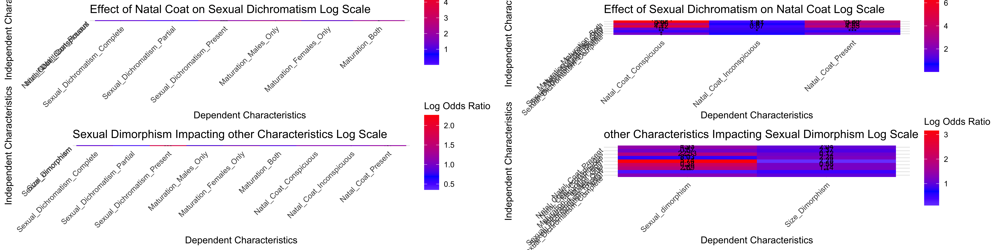

updated_names_analysis
Sarah E Taylor
2024-02-29
Last updated: 2024-02-29
Checks: 7 0
Knit directory: LocksofLineage/
This reproducible R Markdown analysis was created with workflowr (version 1.7.1). The Checks tab describes the reproducibility checks that were applied when the results were created. The Past versions tab lists the development history.
Great! Since the R Markdown file has been committed to the Git repository, you know the exact version of the code that produced these results.
Great job! The global environment was empty. Objects defined in the global environment can affect the analysis in your R Markdown file in unknown ways. For reproduciblity it’s best to always run the code in an empty environment.
The command set.seed(20231117) was run prior to running
the code in the R Markdown file. Setting a seed ensures that any results
that rely on randomness, e.g. subsampling or permutations, are
reproducible.
Great job! Recording the operating system, R version, and package versions is critical for reproducibility.
Nice! There were no cached chunks for this analysis, so you can be confident that you successfully produced the results during this run.
Great job! Using relative paths to the files within your workflowr project makes it easier to run your code on other machines.
Great! You are using Git for version control. Tracking code development and connecting the code version to the results is critical for reproducibility.
The results in this page were generated with repository version e7f9486. See the Past versions tab to see a history of the changes made to the R Markdown and HTML files.
Note that you need to be careful to ensure that all relevant files for
the analysis have been committed to Git prior to generating the results
(you can use wflow_publish or
wflow_git_commit). workflowr only checks the R Markdown
file, but you know if there are other scripts or data files that it
depends on. Below is the status of the Git repository when the results
were generated:
Ignored files:
Ignored: .DS_Store
Ignored: .Rhistory
Ignored: .Rproj.user/
Ignored: data/.DS_Store
Untracked files:
Untracked: VennDiagram.2024-02-29_15-50-13.log
Untracked: VennDiagram.2024-02-29_15-55-51.log
Untracked: output/Recoded_Odds_Ratio.png
Note that any generated files, e.g. HTML, png, CSS, etc., are not included in this status report because it is ok for generated content to have uncommitted changes.
These are the previous versions of the repository in which changes were
made to the R Markdown
(analysis/updated_names_analysis.Rmd) and HTML
(docs/updated_names_analysis.html) files. If you’ve
configured a remote Git repository (see ?wflow_git_remote),
click on the hyperlinks in the table below to view the files as they
were in that past version.
| File | Version | Author | Date | Message |
|---|---|---|---|---|
| Rmd | e7f9486 | Sarah E Taylor | 2024-02-29 | Tried difference versions of heatmaps and venn diagrams. Added regressions for subset of species that have |
| html | 05cdbbb | Sarah E Taylor | 2024-02-29 | Build site. |
| Rmd | 0c8f572 | Sarah E Taylor | 2024-02-29 | changed axis labels on heatmaps |
| html | 385c10f | Sarah E Taylor | 2024-02-29 | Build site. |
| Rmd | 5c2d3c1 | Sarah E Taylor | 2024-02-29 | added upset plot |
| html | 4e1c9c0 | Sarah E Taylor | 2024-02-29 | Build site. |
| Rmd | b54f044 | Sarah E Taylor | 2024-02-29 | Recoded the traits and re-did the logistic regressions and odds ratio matrices |
Recoding the data
data <- read_csv("data/Raw_Data/data_to_use.csv")Rows: 238 Columns: 17
── Column specification ────────────────────────────────────────────────────────
Delimiter: ","
chr (16): family, Genus, species, subspecies, Sexual_dimorphism, Sexual_Dimo...
dbl (1): Size_Dimorphism
ℹ Use `spec()` to retrieve the full column specification for this data.
ℹ Specify the column types or set `show_col_types = FALSE` to quiet this message.# 5 species were recorded as maybe having a natal coat because the sources were conflicting, for now they will be counted as not having a natal coat
# Cheirogaleus major, Macaca sylvanus, Procolobus pennantii, Presbytis femoralis, Pongo pygmaeusdata <- data %>%
mutate(across(c(Sexual_dimorphism, Natal_coat, Sexual_dichromatism), ~if_else(. == "Yes", 1, 0)))# Reclassifying how we distinguish natal coat types
data <- data %>%
mutate(Simple_Natal_Coat_Type = case_when(
Natal_Coat_Type %in% c("Con to dad", "con to both", "con to mom") ~ "conspicuous",
Natal_Coat_Type == "incon" ~ "inconspicuous",
TRUE ~ "none" # This will catch all other cases not specified above
))
# Add a column with all conspicuous natal coats as 1 and inconspicuous as 0
data <- data %>%
mutate(
Natal_Coat_Conspicuous = ifelse(Simple_Natal_Coat_Type == "conspicuous", 1, 0),
Natal_Coat_Inconspicuous = ifelse(Simple_Natal_Coat_Type == "inconspicuous", 1, 0),
Natal_Coat_Present = ifelse(Simple_Natal_Coat_Type %in% c("conspicuous", "inconspicuous"), 1, 0)
)
#Natal coats can be inconspicuous (close in color to parents) or conspicuous (obviously a different color). #When they are conspicuous they can be contrasting to either the mothers coats or the fathers or both. # This is recoding the different types of conspicuous natal coats and sexual dichromatism from separate traits into a continuous change ie infant -> adult female (change/no change), infant -> adult male (change/no change), if both change is another category. If a natal coat is conspicuous to dad it is similar or inconspicuous to mom so the males change when they mature.
data <- data %>%
mutate(Maturation_Color_Change = case_when(
Natal_Coat_Type == "Con to dad" ~ "Males only",
Natal_Coat_Type == "con to both" ~ "Both",
Natal_Coat_Type == "con to mom" ~ "Females only",
TRUE ~ "None"))
# Add binary columns for the different maturation changes
data <- data %>%
mutate(Maturation_Males_Only = ifelse(Maturation_Color_Change == "Males only", 1, 0),
Maturation_Females_Only = ifelse(Maturation_Color_Change == "Females only", 1, 0),
Maturation_Both = ifelse(Maturation_Color_Change == "Both", 1, 0),
Maturation_None = ifelse(Maturation_Color_Change == "None", 1, 0))data <- data %>%
mutate(Sexual_Dichromatism_Complete = ifelse(Sexual_dichromatism_type == "Complete", 1, 0),
Sexual_Dichromatism_Partial = ifelse(Sexual_dichromatism_type == "Partial", 1, 0),
Sexual_Dichromatism_Present = ifelse(Sexual_dichromatism_type %in% c("Complete", "Partial"), 1, 0))write_csv(data, "data/recoded_data.csv")Format data for phylolm
Phylogenetic tree: mammaltree
Number of tips: 5987
Number of nodes: 5986
Branch lengths:
mean: 2.680715
variance: 24.17565
distribution summary:
Min. 1st Qu. Median 3rd Qu. Max.
0.0000000 0.5284341 1.3073255 2.9454665 106.6007500
No root edge.
First ten tip labels: X_Shuotherium
X_Pseudotribos
X_Asfaltomylos
X_Obdurodon
Zaglossus_bartoni
Zaglossus_bruijnii
Zaglossus_attenboroughi
Tachyglossus_aculeatus
Ornithorhynchus_anatinus
X_Teinolophos
No node labels.Rows: 238 Columns: 29
── Column specification ────────────────────────────────────────────────────────
Delimiter: ","
chr (15): family, Genus, species, subspecies, Sexual_Dimorph_type, Location,...
dbl (14): Sexual_dimorphism, Natal_coat, Sexual_dichromatism, Size_Dimorphis...
ℹ Use `spec()` to retrieve the full column specification for this data.
ℹ Specify the column types or set `show_col_types = FALSE` to quiet this message.# A tibble: 6 × 29
family Genus species subsp…¹ Sexua…² Sexua…³ Locat…⁴ Direc…⁵ Natal…⁶ Natal…⁷
<chr> <chr> <chr> <chr> <dbl> <chr> <chr> <chr> <dbl> <chr>
1 cercopi… alle… nigrov… <NA> 0 <NA> <NA> <NA> 1 incon
2 cheirog… allo… tricho… <NA> 0 <NA> <NA> <NA> 0 <NA>
3 cebidae alou… belzeb… <NA> 0 <NA> <NA> <NA> 0 <NA>
4 cebidae alou… caraya <NA> 1 males … Head M 1 Con to…
5 cebidae alou… guariba <NA> 1 male s… Head M 1 incon
6 cebidae alou… pallia… pallia… 1 F: les… Head, … F 1 incon
# … with 19 more variables: NC_description <chr>, Sexual_dichromatism <dbl>,
# Sexual_dichromatism_type <chr>, Where <chr>, Darker <chr>,
# SDC_description <chr>, Size_Dimorphism <dbl>, Simple_Natal_Coat_Type <chr>,
# Natal_Coat_Conspicuous <dbl>, Natal_Coat_Inconspicuous <dbl>,
# Natal_Coat_Present <dbl>, Maturation_Color_Change <chr>,
# Maturation_Males_Only <dbl>, Maturation_Females_Only <dbl>,
# Maturation_Both <dbl>, Maturation_None <dbl>, …#combine genus and species names and capitalize first letter
Binary_traits_combined = Binary_traits %>% unite("species",`Genus`, `species`) %>% mutate(species = str_to_title(species))
head(Binary_traits_combined)# A tibble: 6 × 28
family species subsp…¹ Sexua…² Sexua…³ Locat…⁴ Direc…⁵ Natal…⁶ Natal…⁷ NC_de…⁸
<chr> <chr> <chr> <dbl> <chr> <chr> <chr> <dbl> <chr> <chr>
1 cerco… Alleno… <NA> 0 <NA> <NA> <NA> 1 incon no tre…
2 cheir… Alloce… <NA> 0 <NA> <NA> <NA> 0 <NA> <NA>
3 cebid… Alouat… <NA> 0 <NA> <NA> <NA> 0 <NA> <NA>
4 cebid… Alouat… <NA> 1 males … Head M 1 Con to… infant…
5 cebid… Alouat… <NA> 1 male s… Head M 1 incon possib…
6 cebid… Alouat… pallia… 1 F: les… Head, … F 1 incon incons…
# … with 18 more variables: Sexual_dichromatism <dbl>,
# Sexual_dichromatism_type <chr>, Where <chr>, Darker <chr>,
# SDC_description <chr>, Size_Dimorphism <dbl>, Simple_Natal_Coat_Type <chr>,
# Natal_Coat_Conspicuous <dbl>, Natal_Coat_Inconspicuous <dbl>,
# Natal_Coat_Present <dbl>, Maturation_Color_Change <chr>,
# Maturation_Males_Only <dbl>, Maturation_Females_Only <dbl>,
# Maturation_Both <dbl>, Maturation_None <dbl>, …# prune tree for species in data
species_not_in_tree=setdiff(mammaltree$tip.label, Binary_traits_combined$species)
pruned.tree<-drop.tip(mammaltree,species_not_in_tree)
summary(pruned.tree)
Phylogenetic tree: pruned.tree
Number of tips: 235
Number of nodes: 234
Branch lengths:
mean: 2.864158
variance: 17.90887
distribution summary:
Min. 1st Qu. Median 3rd Qu. Max.
0.04705822 0.88148065 1.69536613 3.05008500 49.61463191
No root edge.
First ten tip labels: Nycticebus_pygmaeus
Nycticebus_coucang
Loris_tardigradus
Galagoides_thomasi
Galago_matschiei
Galago_moholi
Galago_senegalensis
Galago_gallarum
Otolemur_garnettii
Otolemur_crassicaudatus
No node labels.#prune data for species in tree
data_pruned <- Binary_traits_combined %>% filter(species %in% pruned.tree$tip.label)
head(data_pruned)# A tibble: 6 × 28
family species subsp…¹ Sexua…² Sexua…³ Locat…⁴ Direc…⁵ Natal…⁶ Natal…⁷ NC_de…⁸
<chr> <chr> <chr> <dbl> <chr> <chr> <chr> <dbl> <chr> <chr>
1 cerco… Alleno… <NA> 0 <NA> <NA> <NA> 1 incon no tre…
2 cheir… Alloce… <NA> 0 <NA> <NA> <NA> 0 <NA> <NA>
3 cebid… Alouat… <NA> 0 <NA> <NA> <NA> 0 <NA> <NA>
4 cebid… Alouat… <NA> 1 males … Head M 1 Con to… infant…
5 cebid… Alouat… <NA> 1 male s… Head M 1 incon possib…
6 cebid… Alouat… pallia… 1 F: les… Head, … F 1 incon incons…
# … with 18 more variables: Sexual_dichromatism <dbl>,
# Sexual_dichromatism_type <chr>, Where <chr>, Darker <chr>,
# SDC_description <chr>, Size_Dimorphism <dbl>, Simple_Natal_Coat_Type <chr>,
# Natal_Coat_Conspicuous <dbl>, Natal_Coat_Inconspicuous <dbl>,
# Natal_Coat_Present <dbl>, Maturation_Color_Change <chr>,
# Maturation_Males_Only <dbl>, Maturation_Females_Only <dbl>,
# Maturation_Both <dbl>, Maturation_None <dbl>, …# get the order of the tip labels
tip_order <- pruned.tree$tip.label
# Match the order of species in the dataframe to the order of tip labels in the tree
ordered_indices <- match(tip_order, data_pruned$species)
# Reorder the dataframe based on the indices obtained
data_pruned_ordered <- Binary_traits_combined[ordered_indices, ]#put data into useful form for phylolm
colnames(data_pruned_ordered) = gsub(" ", "_", colnames(data_pruned))
data_pruned_rownames = column_to_rownames(data_pruned_ordered, var = "species")
head(data_pruned_rownames) family subspecies Sexual_dimorphism
Simias_concolor cercopithecidae <NA> 0
Miopithecus_talapoin cercopithecidae <NA> 0
Lophocebus_albigena cercopithecidae <NA> 0
Galago_senegalensis galagonidae <NA> 0
Galago_gallarum galagonidae <NA> 0
Galago_matschiei galagonidae <NA> 0
Sexual_Dimorph_type Location Direction Natal_coat
Simias_concolor <NA> <NA> <NA> 1
Miopithecus_talapoin <NA> <NA> <NA> 1
Lophocebus_albigena <NA> <NA> <NA> 1
Galago_senegalensis <NA> <NA> <NA> 0
Galago_gallarum <NA> <NA> <NA> 0
Galago_matschiei <NA> <NA> <NA> 0
Natal_Coat_Type
Simias_concolor incon
Miopithecus_talapoin incon
Lophocebus_albigena incon
Galago_senegalensis <NA>
Galago_gallarum <NA>
Galago_matschiei <NA>
NC_description
Simias_concolor lighter face in infants
Miopithecus_talapoin no treves 31,33,39, juveniles lack the black maxillary patches and have less yellow in the pelage hill
Lophocebus_albigena l.a.johnstoni no treves 28,33,43, in hill this subspecies was uniformly black and got more brown as it aged, infant is darker in zenkeri subspecies, overall the infants are darker with less color variation
Galago_senegalensis no treves 67
Galago_gallarum <NA>
Galago_matschiei <NA>
Sexual_dichromatism Sexual_dichromatism_type Where
Simias_concolor 0 <NA> <NA>
Miopithecus_talapoin 1 Partial Body
Lophocebus_albigena 1 Partial Multiple
Galago_senegalensis 0 <NA> <NA>
Galago_gallarum 0 <NA> <NA>
Galago_matschiei 0 <NA> <NA>
Darker
Simias_concolor <NA>
Miopithecus_talapoin M
Lophocebus_albigena M
Galago_senegalensis <NA>
Galago_gallarum <NA>
Galago_matschiei <NA>
SDC_description
Simias_concolor maybe? rowe 838, 80
Miopithecus_talapoin females are less richly colored hill
Lophocebus_albigena F: paler around ears, hind-neck, and mantle, fewer white rings on mantle hairs, underparts reddish black hill
Galago_senegalensis <NA>
Galago_gallarum <NA>
Galago_matschiei <NA>
Size_Dimorphism Simple_Natal_Coat_Type
Simias_concolor 1 inconspicuous
Miopithecus_talapoin 1 inconspicuous
Lophocebus_albigena 1 inconspicuous
Galago_senegalensis 1 none
Galago_gallarum 0 none
Galago_matschiei 0 none
Natal_Coat_Conspicuous Natal_Coat_Inconspicuous
Simias_concolor 0 1
Miopithecus_talapoin 0 1
Lophocebus_albigena 0 1
Galago_senegalensis 0 0
Galago_gallarum 0 0
Galago_matschiei 0 0
Natal_Coat_Present Maturation_Color_Change
Simias_concolor 1 None
Miopithecus_talapoin 1 None
Lophocebus_albigena 1 None
Galago_senegalensis 0 None
Galago_gallarum 0 None
Galago_matschiei 0 None
Maturation_Males_Only Maturation_Females_Only
Simias_concolor 0 0
Miopithecus_talapoin 0 0
Lophocebus_albigena 0 0
Galago_senegalensis 0 0
Galago_gallarum 0 0
Galago_matschiei 0 0
Maturation_Both Maturation_None
Simias_concolor 0 1
Miopithecus_talapoin 0 1
Lophocebus_albigena 0 1
Galago_senegalensis 0 1
Galago_gallarum 0 1
Galago_matschiei 0 1
Sexual_Dichromatism_Complete Sexual_Dichromatism_Partial
Simias_concolor NA NA
Miopithecus_talapoin 0 1
Lophocebus_albigena 0 1
Galago_senegalensis NA NA
Galago_gallarum NA NA
Galago_matschiei NA NA
Sexual_Dichromatism_Present
Simias_concolor 0
Miopithecus_talapoin 1
Lophocebus_albigena 1
Galago_senegalensis 0
Galago_gallarum 0
Galago_matschiei 0write_csv(data_pruned_rownames, "data/data_formatted_phylolm.csv")Run the Logistic Regressions
# Create the phylolm function
run_phylolm_analyses <- function(data, phylo_tree, independent_vars, dependent_vars){
results <- list()
for (ind_var in independent_vars){
for (dep_var in dependent_vars){
formula <- as.formula(paste(dep_var, "~", ind_var))
model <- phyloglm(formula, data=data, phy=phylo_tree, method = "logistic_MPLE")
results[[paste(ind_var, dep_var, sep = "_vs_")]] <- summary(model)
}
}
return(results)
}
#Function to extract model stats, odds ratio, p-value
extract_model_stats <- function(results_list, independent_vars, dependent_vars) {
# Initialize a matrix to store the odds ratios
odds_ratios <- matrix(NA,
nrow = length(dependent_vars),
ncol = length(independent_vars),
dimnames = list(dependent_vars, independent_vars))
p_values <- matrix(NA,
nrow = length(dependent_vars),
ncol = length(independent_vars),
dimnames = list(dependent_vars, independent_vars))
# Iterate through the results to extract coefficients
for (dep_var in dependent_vars) {
for (ind_var in independent_vars) {
# Construct the result name used as the key in the results list
result_key <- paste(ind_var, dep_var, sep = "_vs_")
# Check if the result exists and extract the coefficients
if (result_key %in% names(results_list)) {
# Extract the model summary
model_summary <- results_list[[result_key]]
# Check if the model summary is indeed a list with a coefficients data frame
if (is.list(model_summary) && "coefficients" %in% names(model_summary)) {
# Extract the estimate for the independent variable
if (ind_var %in% rownames(model_summary$coefficients)) {
estimate <- model_summary$coefficients[ind_var, "Estimate"]
p_value <- model_summary$coefficients[ind_var, "p.value"]
odds_ratios[dep_var, ind_var] <- exp(estimate)
p_values[dep_var, ind_var] <- p_value
}
}
}
}
}
return(list(odds_ratios = odds_ratios, p_values = p_values))
}data <- data_pruned_rownames
phylo_tree <- pruned.tree
independent_vars <- c("Natal_Coat_Conspicuous", "Natal_Coat_Inconspicuous", "Natal_Coat_Present")
dependent_vars <- c("Sexual_Dichromatism_Complete", "Sexual_Dichromatism_Partial", "Sexual_Dichromatism_Present", "Maturation_Males_Only", "Maturation_Females_Only", "Maturation_Both")
Natal_on_Dichromatism_results <- run_phylolm_analyses(data,phylo_tree, independent_vars, dependent_vars)
Natal_on_Dichromatism_model_stats <- extract_model_stats(Natal_on_Dichromatism_results, independent_vars, dependent_vars)
Natal_on_Dichromatism_odds_ratio_matrix <- Natal_on_Dichromatism_model_stats$odds_ratios
Natal_on_Dichromatism_p_value_matrix <- Natal_on_Dichromatism_model_stats$p_valuesdata <- data_pruned_rownames
phylo_tree <- pruned.tree
independent_vars <- c("Sexual_Dichromatism_Complete", "Sexual_Dichromatism_Partial", "Sexual_Dichromatism_Present", "Maturation_Males_Only", "Maturation_Females_Only", "Maturation_Both")
dependent_vars <- c("Natal_Coat_Conspicuous", "Natal_Coat_Inconspicuous", "Natal_Coat_Present")
Dichromatism_on_Natal_results <- run_phylolm_analyses(data,phylo_tree, independent_vars, dependent_vars)
Dichromatism_on_Natal_model_stats <- extract_model_stats(Dichromatism_on_Natal_results, independent_vars, dependent_vars)
Dichromatism_on_Natal_odds_ratio_matrix <- Dichromatism_on_Natal_model_stats$odds_ratios
Dichromatism_on_Natal_p_value_matrix <- Dichromatism_on_Natal_model_stats$p_valuesdata <- data_pruned_rownames
phylo_tree <- pruned.tree
independent_vars <- c("Sexual_dimorphism", "Size_Dimorphism")
dependent_vars <- c("Sexual_Dichromatism_Complete", "Sexual_Dichromatism_Partial", "Sexual_Dichromatism_Present", "Maturation_Males_Only", "Maturation_Females_Only", "Maturation_Both","Natal_Coat_Conspicuous", "Natal_Coat_Inconspicuous", "Natal_Coat_Present")
Dimorphism_on_Natal_and_Dichrom_results <- run_phylolm_analyses(data,phylo_tree, independent_vars, dependent_vars)
Dimorphism_on_Natal_and_Dichrom_model_stats <- extract_model_stats(Dimorphism_on_Natal_and_Dichrom_results, independent_vars, dependent_vars)
Dimorphism_on_Natal_and_Dichrom_odds_ratio_matrix <- Dimorphism_on_Natal_and_Dichrom_model_stats$odds_ratios
Dimorphism_on_Natal_and_Dichrom_p_value_matrix <- Dimorphism_on_Natal_and_Dichrom_model_stats$p_valuesdata <- data_pruned_rownames
phylo_tree <- pruned.tree
independent_vars <- c("Sexual_Dichromatism_Complete", "Sexual_Dichromatism_Partial", "Sexual_Dichromatism_Present", "Maturation_Males_Only", "Maturation_Females_Only", "Maturation_Both","Natal_Coat_Conspicuous", "Natal_Coat_Inconspicuous", "Natal_Coat_Present")
dependent_vars <- c("Sexual_dimorphism", "Size_Dimorphism")
Natal_and_Dichrom_on_Dimorphism_results <- run_phylolm_analyses(data,phylo_tree, independent_vars, dependent_vars)Warning in phyloglm(formula, data = data, phy = phylo_tree, method =
"logistic_MPLE"): will drop from the tree 154 taxa with missing data
Warning in phyloglm(formula, data = data, phy = phylo_tree, method =
"logistic_MPLE"): will drop from the tree 154 taxa with missing data
Warning in phyloglm(formula, data = data, phy = phylo_tree, method =
"logistic_MPLE"): will drop from the tree 154 taxa with missing data
Warning in phyloglm(formula, data = data, phy = phylo_tree, method =
"logistic_MPLE"): will drop from the tree 154 taxa with missing dataWarning in phyloglm(formula, data = data, phy = phylo_tree, method =
"logistic_MPLE"): will drop from the tree 3 taxa with missing dataWarning in phyloglm(formula, data = data, phy = phylo_tree, method =
"logistic_MPLE"): 3 taxa not in the tree: their data will be ignoredWarning in phyloglm(formula, data = data, phy = phylo_tree, method =
"logistic_MPLE"): will drop from the tree 3 taxa with missing dataWarning in phyloglm(formula, data = data, phy = phylo_tree, method =
"logistic_MPLE"): 3 taxa not in the tree: their data will be ignoredWarning in phyloglm(formula, data = data, phy = phylo_tree, method =
"logistic_MPLE"): will drop from the tree 3 taxa with missing dataWarning in phyloglm(formula, data = data, phy = phylo_tree, method =
"logistic_MPLE"): 3 taxa not in the tree: their data will be ignoredWarning in phyloglm(formula, data = data, phy = phylo_tree, method =
"logistic_MPLE"): will drop from the tree 3 taxa with missing dataWarning in phyloglm(formula, data = data, phy = phylo_tree, method =
"logistic_MPLE"): 3 taxa not in the tree: their data will be ignoredWarning in phyloglm(formula, data = data, phy = phylo_tree, method =
"logistic_MPLE"): will drop from the tree 3 taxa with missing dataWarning in phyloglm(formula, data = data, phy = phylo_tree, method =
"logistic_MPLE"): 3 taxa not in the tree: their data will be ignoredWarning in phyloglm(formula, data = data, phy = phylo_tree, method = "logistic_MPLE"): The estimated coefficients in the absence of phylogenetic signal lead
to some linear predictors beyond 'btol'. Increase btol?
Starting from beta=0 other than intercept.Warning in phyloglm(formula, data = data, phy = phylo_tree, method =
"logistic_MPLE"): will drop from the tree 3 taxa with missing dataWarning in phyloglm(formula, data = data, phy = phylo_tree, method =
"logistic_MPLE"): 3 taxa not in the tree: their data will be ignoredWarning in phyloglm(formula, data = data, phy = phylo_tree, method = "logistic_MPLE"): The estimated coefficients in the absence of phylogenetic signal lead
to some linear predictors beyond 'btol'. Increase btol?
Starting from beta=0 other than intercept.Warning in phyloglm(formula, data = data, phy = phylo_tree, method =
"logistic_MPLE"): will drop from the tree 3 taxa with missing dataWarning in phyloglm(formula, data = data, phy = phylo_tree, method =
"logistic_MPLE"): 3 taxa not in the tree: their data will be ignoredWarning in phyloglm(formula, data = data, phy = phylo_tree, method =
"logistic_MPLE"): will drop from the tree 3 taxa with missing dataWarning in phyloglm(formula, data = data, phy = phylo_tree, method =
"logistic_MPLE"): 3 taxa not in the tree: their data will be ignoredWarning in phyloglm(formula, data = data, phy = phylo_tree, method =
"logistic_MPLE"): will drop from the tree 3 taxa with missing dataWarning in phyloglm(formula, data = data, phy = phylo_tree, method =
"logistic_MPLE"): 3 taxa not in the tree: their data will be ignoredWarning in phyloglm(formula, data = data, phy = phylo_tree, method =
"logistic_MPLE"): will drop from the tree 3 taxa with missing dataWarning in phyloglm(formula, data = data, phy = phylo_tree, method =
"logistic_MPLE"): 3 taxa not in the tree: their data will be ignoredWarning in phyloglm(formula, data = data, phy = phylo_tree, method =
"logistic_MPLE"): will drop from the tree 3 taxa with missing dataWarning in phyloglm(formula, data = data, phy = phylo_tree, method =
"logistic_MPLE"): 3 taxa not in the tree: their data will be ignoredWarning in phyloglm(formula, data = data, phy = phylo_tree, method =
"logistic_MPLE"): will drop from the tree 3 taxa with missing dataWarning in phyloglm(formula, data = data, phy = phylo_tree, method =
"logistic_MPLE"): 3 taxa not in the tree: their data will be ignoredWarning in phyloglm(formula, data = data, phy = phylo_tree, method =
"logistic_MPLE"): will drop from the tree 3 taxa with missing dataWarning in phyloglm(formula, data = data, phy = phylo_tree, method =
"logistic_MPLE"): 3 taxa not in the tree: their data will be ignoredWarning in phyloglm(formula, data = data, phy = phylo_tree, method =
"logistic_MPLE"): will drop from the tree 3 taxa with missing dataWarning in phyloglm(formula, data = data, phy = phylo_tree, method =
"logistic_MPLE"): 3 taxa not in the tree: their data will be ignoredNatal_and_Dichrom_on_Dimorphism_model_stats <- extract_model_stats(Natal_and_Dichrom_on_Dimorphism_results, independent_vars, dependent_vars)
Natal_and_Dichrom_on_Dimorphism_odds_ratio_matrix <- Natal_and_Dichrom_on_Dimorphism_model_stats$odds_ratios
Natal_and_Dichrom_on_Dimorphism_p_value_matrix <- Natal_and_Dichrom_on_Dimorphism_model_stats$p_valuesVisualizations
# Function to determine significance symbols based on p-values
get_significance_symbol <- function(p_value) {
ifelse(p_value < 0.001, '***',
ifelse(p_value < 0.01, '**',
ifelse(p_value < 0.05, '*', '')))
}
# Function to create a heatmap with significance symbols
create_heatmap <- function(odds_ratio_matrix, p_value_matrix, title_prefix) {
# Melt the odds ratio matrix and p-value matrix into data frames
df_odds <- melt(odds_ratio_matrix)
df_pvals <- melt(p_value_matrix)
# Add column names for merging
colnames(df_odds) <- c("RowTraits", "ColTraits", "value")
colnames(df_pvals) <- c("RowTraits", "ColTraits", "p_value")
# Merge the data frames
df_merged <- merge(df_odds, df_pvals, by = c("RowTraits", "ColTraits"))
# Apply logarithmic transformation to the odds ratio values
df_merged$value_log <- log(df_merged$value + 1)
# Calculate significance symbols
df_merged$significance <- get_significance_symbol(df_merged$p_value)
# Create the heatmap
heatmap <- ggplot(df_merged, aes(RowTraits, ColTraits, fill = value_log)) +
geom_tile() +
scale_fill_gradient2(low = "white", high = "red", mid = "blue", midpoint = log(1 + 1), space = "Lab", name="Log Odds Ratio") +
geom_text(aes(label = sprintf("%.2f", value)), size = 3, vjust = -1) +
geom_text(aes(label = significance), size = 3, vjust = 1) +
theme_minimal() +
labs(title = paste(title_prefix, "Log Scale"), x = "Dependent Characteristics", y = "Independent Characteristics") +
theme(axis.text.x = element_text(angle = 45, hjust = 1), axis.text.y = element_text(angle = 45, vjust = 1))
return(heatmap)
}
# usage:
heatmap1 <- create_heatmap(Natal_on_Dichromatism_odds_ratio_matrix, Natal_on_Dichromatism_p_value_matrix, "Effect of Natal Coat on Sexual Dichromatism")
heatmap2 <- create_heatmap(Dichromatism_on_Natal_odds_ratio_matrix, Dichromatism_on_Natal_p_value_matrix, "Effect of Sexual Dichromatism on Natal Coat")
heatmap3 <- create_heatmap( Dimorphism_on_Natal_and_Dichrom_odds_ratio_matrix, Dimorphism_on_Natal_and_Dichrom_p_value_matrix, "Sexual Dimorphism Impacting other Characteristics")
heatmap4 <- create_heatmap( Natal_and_Dichrom_on_Dimorphism_odds_ratio_matrix, Natal_and_Dichrom_on_Dimorphism_p_value_matrix, "other Characteristics Impacting Sexual Dimorphism")
# Print heatmaps side by side
grid.arrange(heatmap1, heatmap2, heatmap3, heatmap4, ncol = 2, nrow = 2)
create_signif_heatmap <- function(odds_ratio_matrix, p_value_matrix, title_prefix, signif_level = 0.05) {
# Melt the odds ratio matrix and p-value matrix into data frames
df_odds <- melt(odds_ratio_matrix)
df_pvals <- melt(p_value_matrix)
# Add column names for merging
colnames(df_odds) <- c("RowTraits", "ColTraits", "value")
colnames(df_pvals) <- c("RowTraits", "ColTraits", "p_value")
# Merge the data frames
df_merged <- merge(df_odds, df_pvals, by = c("RowTraits", "ColTraits"))
# Apply logarithmic transformation to the odds ratio values
df_merged$value_log <- log(df_merged$value + 1)
# Calculate significance symbols
df_merged$significance <- get_significance_symbol(df_merged$p_value)
# Create a new column for the fill color based on significance
df_merged$fill_color <- ifelse(df_merged$p_value < signif_level, 'significant', 'not_significant')
# Create the heatmap
heatmap <- ggplot(df_merged, aes(RowTraits, ColTraits)) +
geom_tile(aes(fill = fill_color), color = "black", size = 0.5) + # Add borders here
scale_fill_manual(values = c('significant' = 'purple', 'not_significant' = 'grey')) +
geom_text(aes(label = sprintf("%.2f", value)), size = 3, vjust = 1, color = "white") + # Removed color mapping for text labels
geom_text(aes(label = significance), size = 3, vjust = 0.5, color = "black") + # Removed color mapping for significance labels
theme_minimal() +
labs(title = paste(title_prefix, "Log Scale"), x = "Dependent Characteristics", y = "Independent Characteristics") +
theme(
axis.text.x = element_text(angle = 45, hjust = 1),
axis.text.y = element_text(angle = 45, vjust = 1)
)
return(heatmap)
}
signif_level <- 0.05
heatmapS1 <- create_signif_heatmap(Natal_on_Dichromatism_odds_ratio_matrix, Natal_on_Dichromatism_p_value_matrix, "Effect of Natal Coat on Sexual Dichromatism")Warning: Using `size` aesthetic for lines was deprecated in ggplot2 3.4.0.
ℹ Please use `linewidth` instead.
This warning is displayed once every 8 hours.
Call `lifecycle::last_lifecycle_warnings()` to see where this warning was
generated.heatmapS2 <- create_signif_heatmap(Dichromatism_on_Natal_odds_ratio_matrix, Dichromatism_on_Natal_p_value_matrix, "Effect of Sexual Dichromatism on Natal Coat")
heatmapS3 <- create_signif_heatmap( Dimorphism_on_Natal_and_Dichrom_odds_ratio_matrix, Dimorphism_on_Natal_and_Dichrom_p_value_matrix, "Sexual Dimorphism Impacting other Characteristics")
heatmapS4 <- create_signif_heatmap( Natal_and_Dichrom_on_Dimorphism_odds_ratio_matrix, Natal_and_Dichrom_on_Dimorphism_p_value_matrix, "other Characteristics Impacting Sexual Dimorphism")
# Print heatmaps side by side
grid.arrange(heatmapS1, heatmapS2, heatmapS3, heatmapS4, ncol = 2, nrow = 2)create_heatmap_non_sig_na_grey <- function(odds_ratio_matrix, p_value_matrix, title_prefix, signif_level = 0.05) {
# Melt the odds ratio matrix and p-value matrix into data frames
df_odds <- melt(odds_ratio_matrix)
df_pvals <- melt(p_value_matrix)
# Add column names for merging
colnames(df_odds) <- c("RowTraits", "ColTraits", "value")
colnames(df_pvals) <- c("RowTraits", "ColTraits", "p_value")
# Merge the data frames
df_merged <- merge(df_odds, df_pvals, by = c("RowTraits", "ColTraits"))
# Apply logarithmic transformation to the odds ratio values
df_merged$value_log <- log(df_merged$value + 1)
# Calculate significance symbols and determine which values to grey out
df_merged$significance <- get_significance_symbol(df_merged$p_value)
df_merged$fill <- ifelse(df_merged$p_value < signif_level, df_merged$value_log, NA)
# Create the heatmap
heatmap <- ggplot(df_merged, aes(RowTraits, ColTraits)) +
geom_tile(aes(fill = fill), color = "black", size = 0.3) +
scale_fill_gradient2(low = "white", high = "red", mid = "blue",
midpoint = log(1 + 1), space = "Lab", name="Log Odds Ratio",
na.value = "grey", limits = range(df_merged$value_log, na.rm = TRUE)) +
geom_text(aes(label = ifelse(is.na(fill), "", sprintf("%.2f", value))), size = 3, vjust = -1) +
geom_text(aes(label = significance), size = 3, vjust = 1) +
theme_minimal() +
labs(title = paste(title_prefix, "Log Scale"), x = "Dependent Characteristics", y = "Independent Characteristics") +
theme(axis.text.x = element_text(angle = 45, hjust = 1), axis.text.y = element_text(angle = 45, vjust = 1))
return(heatmap)
}
heatmapSG1 <- create_heatmap_non_sig_na_grey(Natal_on_Dichromatism_odds_ratio_matrix, Natal_on_Dichromatism_p_value_matrix, "Effect of Natal Coat on Sexual Dichromatism")
heatmapSG2 <- create_heatmap_non_sig_na_grey(Dichromatism_on_Natal_odds_ratio_matrix, Dichromatism_on_Natal_p_value_matrix, "Effect of Sexual Dichromatism on Natal Coat")
heatmapSG3 <- create_heatmap_non_sig_na_grey( Dimorphism_on_Natal_and_Dichrom_odds_ratio_matrix, Dimorphism_on_Natal_and_Dichrom_p_value_matrix, "Sexual Dimorphism Impacting other Characteristics")
heatmapSG4 <- create_heatmap_non_sig_na_grey( Natal_and_Dichrom_on_Dimorphism_odds_ratio_matrix, Natal_and_Dichrom_on_Dimorphism_p_value_matrix, "other Characteristics Impacting Sexual Dimorphism")
# Print heatmaps side by side
grid.arrange(heatmapSG1, heatmapSG2, heatmapSG3, heatmapSG4, ncol = 2, nrow = 2)# Define the traits
set_attributes <- c(
'Natal_Coat_Conspicuous',
'Size_Dimorphism',
'Sexual_Dichromatism_Complete',
'Sexual_Dichromatism_Partial',
'Maturation_Males_Only',
'Maturation_Females_Only',
'Maturation_Both',
'Sexual_dimorphism')
# Create the plot
upset(
data_pruned_rownames,
set_attributes,
base_annotations=list(
'Intersection size'=intersection_size(
counts=TRUE,
mapping=aes(fill=family)
)
),
width_ratio=0.1
)Warning in upset_data(data, intersect, mode = mode, encode_sets = encode_sets,
: Converting non-logical columns to binary: Natal_Coat_Conspicuous,
Size_Dimorphism, Sexual_Dichromatism_Complete, Sexual_Dichromatism_Partial,
Maturation_Males_Only, Maturation_Females_Only, Maturation_Both,
Sexual_dimorphismWarning in upset_data(data, intersect, mode = mode, encode_sets = encode_sets,
: Detected missing values in the columns indicating sets, coercing to FALSE
| Version | Author | Date |
|---|---|---|
| 385c10f | Sarah E Taylor | 2024-02-29 |
library(ggvenn)Loading required package: grid# Convert the specified columns to logical
data_pruned_rownames$Natal_coat <- as.logical(data_pruned_rownames$Natal_coat)
data_pruned_rownames$Sexual_dichromatism <- as.logical(data_pruned_rownames$Sexual_dichromatism)
data_pruned_rownames$Sexual_dimorphism <- as.logical(data_pruned_rownames$Sexual_dimorphism)
# Create the Venn diagram
ggvenn(data_pruned_rownames, c("Natal_coat", "Sexual_dichromatism", "Sexual_dimorphism"))#Venn to just show natal coat characteristics "species inconspicuous and conspicuous relative to total species with and without natal coats
data_pruned_rownames$Natal_Coat_Conspicuous <- as.logical(data_pruned_rownames$Natal_Coat_Conspicuous)
data_pruned_rownames$Natal_Coat_Inconspicuous <- as.logical(data_pruned_rownames$Natal_Coat_Inconspicuous)
ggvenn(data_pruned_rownames, c("Sexual_dichromatism", "Natal_Coat_Conspicuous", "Natal_Coat_Inconspicuous"))Subset Data to only include species that have a natal coat
natal_coat_subset <- Binary_traits_combined[Binary_traits_combined$Natal_coat == TRUE, ]# prune tree for species in data
nc_species_not_in_tree=setdiff(mammaltree$tip.label, natal_coat_subset$species)
nc_pruned.tree<-drop.tip(mammaltree,nc_species_not_in_tree)
summary(nc_pruned.tree)
Phylogenetic tree: nc_pruned.tree
Number of tips: 129
Number of nodes: 128
Branch lengths:
mean: 3.372999
variance: 27.42522
distribution summary:
Min. 1st Qu. Median 3rd Qu. Max.
0.04705822 1.09667652 1.79498381 3.53188634 56.57782320
No root edge.
First ten tip labels: Nycticebus_pygmaeus
Nycticebus_coucang
Loris_tardigradus
Perodicticus_potto
Arctocebus_calabarensis
Arctocebus_aureus
Indri_indri
Propithecus_verreauxi
Avahi_laniger
Hapalemur_griseus
No node labels.#prune data for species in tree
nc_data_pruned <- natal_coat_subset %>% filter(species %in% nc_pruned.tree$tip.label)
head(nc_data_pruned)# A tibble: 6 × 28
family species subsp…¹ Sexua…² Sexua…³ Locat…⁴ Direc…⁵ Natal…⁶ Natal…⁷ NC_de…⁸
<chr> <chr> <chr> <dbl> <chr> <chr> <chr> <dbl> <chr> <chr>
1 cerco… Alleno… <NA> 0 <NA> <NA> <NA> 1 incon no tre…
2 cebid… Alouat… <NA> 1 males … Head M 1 Con to… infant…
3 cebid… Alouat… <NA> 1 male s… Head M 1 incon possib…
4 cebid… Alouat… pallia… 1 F: les… Head, … F 1 incon incons…
5 cebid… Alouat… <NA> 0 <NA> <NA> <NA> 1 incon infant…
6 cebid… Alouat… <NA> 0 <NA> <NA> <NA> 1 incon incon …
# … with 18 more variables: Sexual_dichromatism <dbl>,
# Sexual_dichromatism_type <chr>, Where <chr>, Darker <chr>,
# SDC_description <chr>, Size_Dimorphism <dbl>, Simple_Natal_Coat_Type <chr>,
# Natal_Coat_Conspicuous <dbl>, Natal_Coat_Inconspicuous <dbl>,
# Natal_Coat_Present <dbl>, Maturation_Color_Change <chr>,
# Maturation_Males_Only <dbl>, Maturation_Females_Only <dbl>,
# Maturation_Both <dbl>, Maturation_None <dbl>, …# get the order of the tip labels
nc_tip_order <- nc_pruned.tree$tip.label
# Match the order of species in the dataframe to the order of tip labels in the tree
nc_ordered_indices <- match(nc_tip_order, nc_data_pruned$species)
# Reorder the dataframe based on the indices obtained
nc_data_pruned_ordered <- natal_coat_subset[nc_ordered_indices, ]#put data into useful form for phylolm
colnames(nc_data_pruned_ordered) = gsub(" ", "_", colnames(nc_data_pruned))
nc_data_pruned_rownames = column_to_rownames(nc_data_pruned_ordered, var = "species")
head(nc_data_pruned_rownames) family
Nycticebus_pygmaeus loridae
Nycticebus_coucang loridae
Loris_tardigradus loridae
Perodicticus_potto loridae
Arctocebus_calabarensis loridae
Arctocebus_aureus loridae
subspecies
Nycticebus_pygmaeus <NA>
Nycticebus_coucang <NA>
Loris_tardigradus NC: lydekkerianus, nordicus, nycticeboides, tardigradus
Perodicticus_potto <NA>
Arctocebus_calabarensis <NA>
Arctocebus_aureus <NA>
Sexual_dimorphism Sexual_Dimorph_type Location
Nycticebus_pygmaeus 0 <NA> <NA>
Nycticebus_coucang 0 <NA> <NA>
Loris_tardigradus 0 <NA> <NA>
Perodicticus_potto 0 <NA> <NA>
Arctocebus_calabarensis 0 <NA> <NA>
Arctocebus_aureus 0 <NA> <NA>
Direction Natal_coat Natal_Coat_Type
Nycticebus_pygmaeus <NA> 1 incon
Nycticebus_coucang <NA> 1 incon
Loris_tardigradus <NA> 1 incon
Perodicticus_potto <NA> 1 incon
Arctocebus_calabarensis <NA> 1 incon
Arctocebus_aureus <NA> 1 incon
NC_description
Nycticebus_pygmaeus incon to both treves, darker orbital ring in juveniles, interocular strip is yellowish, more of a cinnamon color all over hill
Nycticebus_coucang gray body, silvery white limbs with long hairs* rowe 704, maybe incon to both treves 46,67, may only be one subspecies, but it seems to have been present in acharjyo, aposematism to warn against predators (Nekaris 2019)
Loris_tardigradus l.t.grandis incon to dad (females and infants darker hill), l.t.lydekkerianus incon to both (silver-gray dorsal, white ventral hill), l.t.nordicus incon to both (infants similar to ydekkerianus hill), l.t.nycticeboides incon to mom (dark gray hill), l.t.tardigradus incon to both (slaty-gray dorsum, white ventral, chestnut patches around the eyes hill)
Perodicticus_potto p.p.edwardsi incon to both (juveniles have a silvery coat head changes first hill), p.p.ibeanus incon to both (woolly-coated , whitish with faint cinnamon wash hill), p.p.juju no , p.p.potto no contrast (juveniles darker hill) treves 67, unclear subspecies incon to bot treves 73, full description of single infant in walker 1968 page
Arctocebus_calabarensis contrasting reports in treves from hill 1953, maybe incon to both treves 67, im gonna go with yes, darker coats that lighten with age
Arctocebus_aureus darker coats rowe, hill 1963 incon to both
Sexual_dichromatism Sexual_dichromatism_type Where
Nycticebus_pygmaeus 0 <NA> <NA>
Nycticebus_coucang 0 <NA> <NA>
Loris_tardigradus 1 Complete <NA>
Perodicticus_potto 0 <NA> <NA>
Arctocebus_calabarensis 0 <NA> <NA>
Arctocebus_aureus 0 <NA> <NA>
Darker
Nycticebus_pygmaeus <NA>
Nycticebus_coucang <NA>
Loris_tardigradus Varies
Perodicticus_potto <NA>
Arctocebus_calabarensis <NA>
Arctocebus_aureus <NA>
SDC_description
Nycticebus_pygmaeus <NA>
Nycticebus_coucang <NA>
Loris_tardigradus nycticeboides F:paler, tardigradus M:russet F: more brown, grandis M:dark grey or brown grey on the dorsum, white ventral F: darker
Perodicticus_potto <NA>
Arctocebus_calabarensis <NA>
Arctocebus_aureus <NA>
Size_Dimorphism Simple_Natal_Coat_Type
Nycticebus_pygmaeus 1 inconspicuous
Nycticebus_coucang 0 inconspicuous
Loris_tardigradus 1 inconspicuous
Perodicticus_potto 0 inconspicuous
Arctocebus_calabarensis 0 inconspicuous
Arctocebus_aureus 0 inconspicuous
Natal_Coat_Conspicuous Natal_Coat_Inconspicuous
Nycticebus_pygmaeus 0 1
Nycticebus_coucang 0 1
Loris_tardigradus 0 1
Perodicticus_potto 0 1
Arctocebus_calabarensis 0 1
Arctocebus_aureus 0 1
Natal_Coat_Present Maturation_Color_Change
Nycticebus_pygmaeus 1 None
Nycticebus_coucang 1 None
Loris_tardigradus 1 None
Perodicticus_potto 1 None
Arctocebus_calabarensis 1 None
Arctocebus_aureus 1 None
Maturation_Males_Only Maturation_Females_Only
Nycticebus_pygmaeus 0 0
Nycticebus_coucang 0 0
Loris_tardigradus 0 0
Perodicticus_potto 0 0
Arctocebus_calabarensis 0 0
Arctocebus_aureus 0 0
Maturation_Both Maturation_None
Nycticebus_pygmaeus 0 1
Nycticebus_coucang 0 1
Loris_tardigradus 0 1
Perodicticus_potto 0 1
Arctocebus_calabarensis 0 1
Arctocebus_aureus 0 1
Sexual_Dichromatism_Complete
Nycticebus_pygmaeus NA
Nycticebus_coucang NA
Loris_tardigradus 1
Perodicticus_potto NA
Arctocebus_calabarensis NA
Arctocebus_aureus NA
Sexual_Dichromatism_Partial Sexual_Dichromatism_Present
Nycticebus_pygmaeus NA 0
Nycticebus_coucang NA 0
Loris_tardigradus 0 1
Perodicticus_potto NA 0
Arctocebus_calabarensis NA 0
Arctocebus_aureus NA 0data <- nc_data_pruned_rownames
phylo_tree <- pruned.tree
independent_vars <- c("Natal_Coat_Conspicuous", "Natal_Coat_Inconspicuous")
dependent_vars <- c("Sexual_Dichromatism_Complete", "Sexual_Dichromatism_Partial", "Sexual_Dichromatism_Present", "Maturation_Males_Only", "Maturation_Females_Only", "Maturation_Both")
subset_Natal_on_Dichromatism_results <- run_phylolm_analyses(data,phylo_tree, independent_vars, dependent_vars)
subset_Natal_on_Dichromatism_model_stats <- extract_model_stats(subset_Natal_on_Dichromatism_results, independent_vars, dependent_vars)
subset_Natal_on_Dichromatism_odds_ratio_matrix <- subset_Natal_on_Dichromatism_model_stats$odds_ratios
subset_Natal_on_Dichromatism_p_value_matrix <- subset_Natal_on_Dichromatism_model_stats$p_valuesdata <- nc_data_pruned_rownames
phylo_tree <- pruned.tree
independent_vars <- c("Sexual_Dichromatism_Complete", "Sexual_Dichromatism_Partial", "Sexual_Dichromatism_Present", "Maturation_Males_Only", "Maturation_Females_Only", "Maturation_Both")
dependent_vars <- c("Natal_Coat_Conspicuous", "Natal_Coat_Inconspicuous")
subset_Dichromatism_on_Natal_results <- run_phylolm_analyses(data,phylo_tree, independent_vars, dependent_vars)
subset_Dichromatism_on_Natal_model_stats <- extract_model_stats(subset_Dichromatism_on_Natal_results, independent_vars, dependent_vars)
subset_Dichromatism_on_Natal_odds_ratio_matrix <- subset_Dichromatism_on_Natal_model_stats$odds_ratios
subset_Dichromatism_on_Natal_p_value_matrix <- subset_Dichromatism_on_Natal_model_stats$p_valuesheatmapSubset1 <- create_heatmap_non_sig_na_grey(subset_Natal_on_Dichromatism_odds_ratio_matrix, subset_Natal_on_Dichromatism_p_value_matrix, "Subset Effect of Natal Coat on Sexual Dichromatism")
heatmapSubset2 <- create_heatmap_non_sig_na_grey(subset_Dichromatism_on_Natal_odds_ratio_matrix, subset_Dichromatism_on_Natal_p_value_matrix, "Subset Effect of Sexual Dichromatism on Natal Coat")
# Print heatmaps side by side
grid.arrange(heatmapSubset1, heatmapSubset2, ncol = 2)
sessionInfo()R version 4.2.1 (2022-06-23)
Platform: x86_64-apple-darwin17.0 (64-bit)
Running under: macOS Big Sur ... 10.16
Matrix products: default
BLAS: /Library/Frameworks/R.framework/Versions/4.2/Resources/lib/libRblas.0.dylib
LAPACK: /Library/Frameworks/R.framework/Versions/4.2/Resources/lib/libRlapack.dylib
locale:
[1] en_US.UTF-8/en_US.UTF-8/en_US.UTF-8/C/en_US.UTF-8/en_US.UTF-8
attached base packages:
[1] grid stats graphics grDevices utils datasets methods
[8] base
other attached packages:
[1] ggvenn_0.1.10 ComplexUpset_1.3.3 reshape2_1.4.4 gridExtra_2.3
[5] phytools_2.0-3 maps_3.4.1 ggtree_3.6.2 phylolm_2.6.2
[9] lubridate_1.9.2 forcats_1.0.0 stringr_1.5.0 purrr_1.0.1
[13] tidyr_1.3.0 tibble_3.1.8 ggplot2_3.4.4 tidyverse_2.0.0
[17] ape_5.7 readr_2.1.4 dplyr_1.1.0 workflowr_1.7.1
loaded via a namespace (and not attached):
[1] colorspace_2.0-3 ellipsis_0.3.2 rprojroot_2.0.4
[4] fs_1.6.1 aplot_0.1.9 rstudioapi_0.14
[7] listenv_0.9.0 farver_2.1.1 optimParallel_1.0-2
[10] bit64_4.0.5 fansi_1.0.3 codetools_0.2-18
[13] mnormt_2.1.1 doParallel_1.0.17 cachem_1.0.6
[16] knitr_1.42 jsonlite_1.8.8 compiler_4.2.1
[19] httr_1.4.4 Matrix_1.5-3 fastmap_1.1.0
[22] lazyeval_0.2.2 cli_3.6.2 later_1.3.1
[25] htmltools_0.5.7 tools_4.2.1 igraph_1.5.1
[28] coda_0.19-4 gtable_0.3.1 glue_1.6.2
[31] clusterGeneration_1.3.8 fastmatch_1.1-3 Rcpp_1.0.11
[34] jquerylib_0.1.4 vctrs_0.5.2 nlme_3.1-160
[37] iterators_1.0.14 xfun_0.41 globals_0.16.2
[40] ps_1.7.2 timechange_0.2.0 lifecycle_1.0.3
[43] phangorn_2.11.1 future_1.33.0 getPass_0.2-2
[46] MASS_7.3-58.1 scales_1.2.1 vroom_1.6.1
[49] hms_1.1.2 promises_1.2.1 parallel_4.2.1
[52] expm_0.999-7 yaml_2.3.7 ggfun_0.0.9
[55] yulab.utils_0.0.6 sass_0.4.5 stringi_1.7.8
[58] highr_0.10 foreach_1.5.2 tidytree_0.4.2
[61] rlang_1.1.2 pkgconfig_2.0.3 evaluate_0.23
[64] lattice_0.20-45 treeio_1.22.0 patchwork_1.1.2
[67] labeling_0.4.2 bit_4.0.5 processx_3.8.3
[70] tidyselect_1.2.0 parallelly_1.36.0 plyr_1.8.9
[73] magrittr_2.0.3 R6_2.5.1 generics_0.1.3
[76] combinat_0.0-8 DBI_1.1.3 pillar_1.8.1
[79] whisker_0.4.1 withr_2.5.0 scatterplot3d_0.3-44
[82] future.apply_1.11.0 crayon_1.5.2 utf8_1.2.2
[85] tzdb_0.3.0 rmarkdown_2.20 callr_3.7.3
[88] git2r_0.32.0 digest_0.6.30 httpuv_1.6.11
[91] numDeriv_2016.8-1.1 gridGraphics_0.5-1 munsell_0.5.0
[94] ggplotify_0.1.0 bslib_0.4.2 quadprog_1.5-8